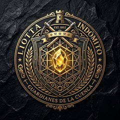
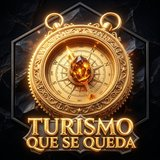
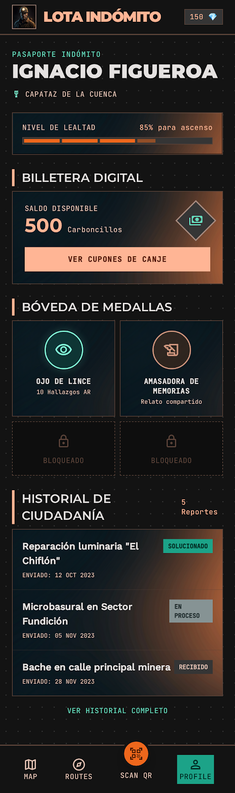
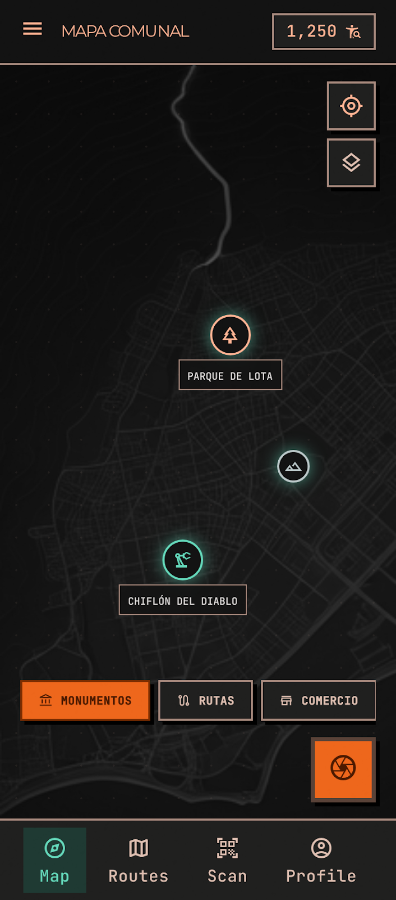
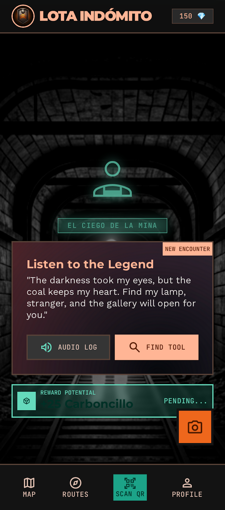
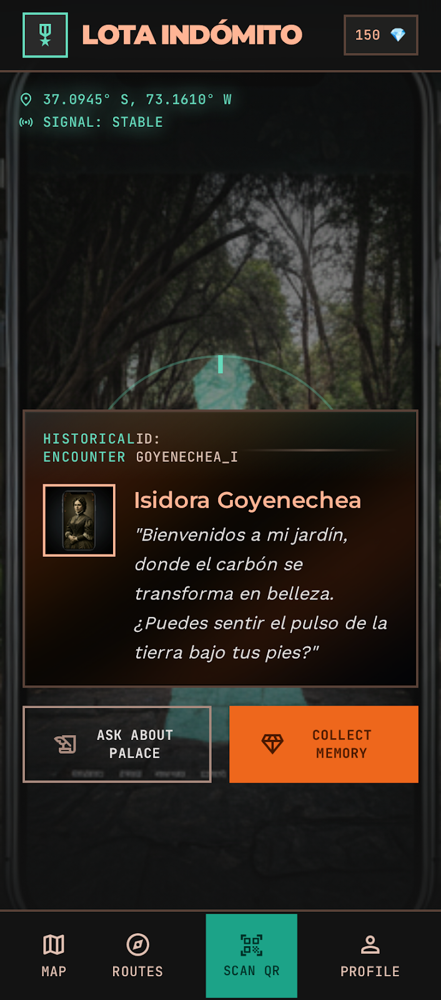
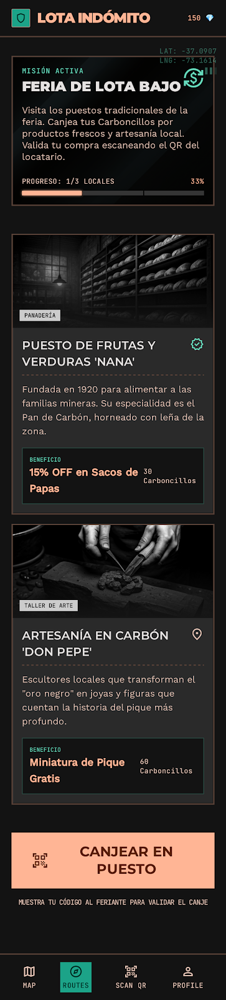
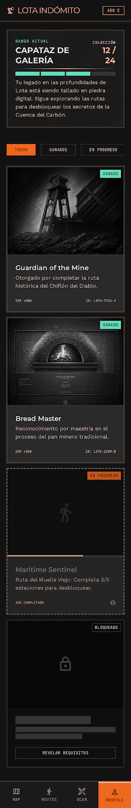
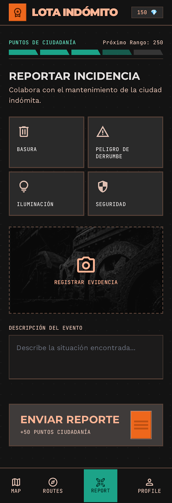

Lota Indómito
Un juego de calle que convierte el patrimonio carbonero de Lota en una aventura real: caminas, descubres, juegas — y el comercio local revive.
Prueba el Piloto A directamente
Navega el mapa 3D táctico de Lota en tiempo real. Puedes interactuar con las LotaStops patrimoniales, iniciar micro-sesiones con Isidora Goyenechea y El Ciego de la Mina, o abrir la PWA en pantalla completa.
El patrimonio es el juego
Lota Indómito es un juego geolocalizado para teléfono, tipo Pokémon GO, ambientado en la historia real del carbón. El jugador recorre las calles y zonas históricas de la comuna, descubre a los personajes del pasado carbonero, completa misiones, recolecta minerales del juego y sube de rango.
El mundo real maneja el juego: los eventos del cielo determinan qué personajes y recompensas están activos en cada momento, y las festividades reales de Lota activan eventos especiales que llevan visitantes a la calle.
Personajes históricos
Isidora Goyenechea, El Ciego de la Mina, La Chinchorrera Mayor y El Palanquero: cuatro figuras reales del pasado carbonero, vivas en el juego.
Economía de minerales
Cobre, oro y estaño con identidad propia: se ganan por acciones diferenciadas y se canjean en el comercio local de Lota.
Eventos reales & Zonas
Festividades y estaciones sincronizan el juego con el calendario de Lota, coordinando flujos turísticos hacia el comercio local.

El comercio revive
El comercio local participa del juego y se beneficia del flujo de visitantes que la experiencia genera. El proyecto se autofinancia.
Cómo funciona
La hora, las estaciones y las festividades de Lota determinan qué está activo en el juego.
Los personajes del pasado carbonero aparecen en las zonas patrimoniales de la comuna.
Guiado por su teléfono, el jugador camina por Lota hasta dar con ellos.
Cada encuentro reconstruye la historia real de la comuna, pieza por pieza.
Un juego con propósito
Lota Indómito no es solo entretención: es una herramienta de desarrollo local. El juego convierte el patrimonio en un motivo real para caminar por Lota, y ese recorrido se traduce en turismo que llega, comercio que vende y comunidad que se reconoce en su historia.

Turismo que se queda
El visitante que llega a ver el Chiflón o el Pabellón 83 encuentra un motivo más para recorrer la comuna: el juego lo guía por zonas, comercios y rincones que de otro modo pasaría de largo.
Comercio que revive
Los comercios locales participan del juego: canje de recompensas, ofertas y subastas convierten el flujo de jugadores en clientes reales. El comercio es el motor que sostiene la plataforma.
Datos para la comuna
El movimiento de los jugadores genera información de movilidad y afluencia que el municipio puede usar para planificar turismo, comercio y servicios — sin depender de plataformas externas.
Comunidad con memoria
Los personajes del pasado carbonero vuelven a la calle: el juego reencuentra a Lota con su propia historia y da a las nuevas generaciones una razón para conocerla.
El modelo es simple y medible: el juego lleva gente a la calle, la calle lleva gente al comercio, y el comercio sostiene la plataforma. Así, la inversión inicial en patrimonio se convierte en un circuito que se alimenta solo — y que puede replicarse en todo el corredor del carbón.
Dos capas, un mismo sistema
El concepto se construye en dos capas complementarias — el teléfono y el motor — que son parte del mismo sistema, no alternativas.
Piloto A — PWA
La ventana de observación: el mapa, las zonas patrimoniales y el geofencing viven en el teléfono del jugador.
- Vue 3 + TypeScript + MapLibre
- Geofencing en el cliente con Turf.js
- Mapas OpenStreetMap, sin Google
- Funciona offline en terreno
Piloto B — Motor S60
El corazón del concepto: matemática soberana que calcula el cielo, los eventos y los portales sin depender de nadie.
- Rust + wgpu + aritmética base 60 (S60)
- 0 floats: precisión exacta, sin truncamientos
- Pipeline GPU sobre Vulkan (GTX 1050)
- Lattice resonante + memoria compartida
Así se ve la experiencia
52 pantallas del prototipo de la experiencia: el pasaporte, el mapa de la comuna, los encuentros, el canje en el comercio y los reportes ciudadanos.






